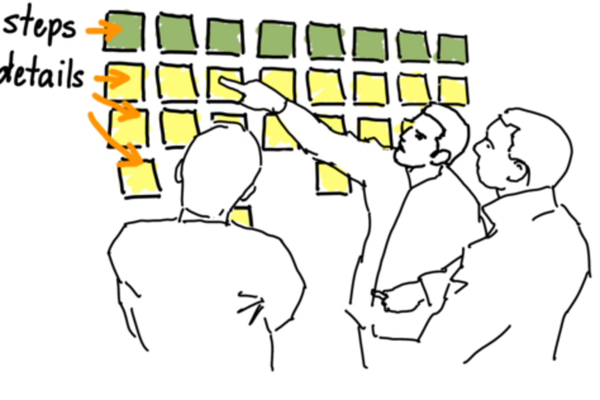
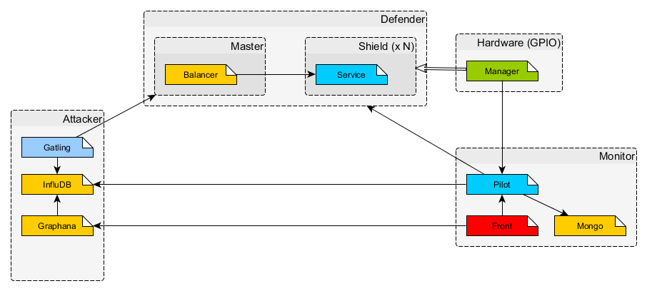
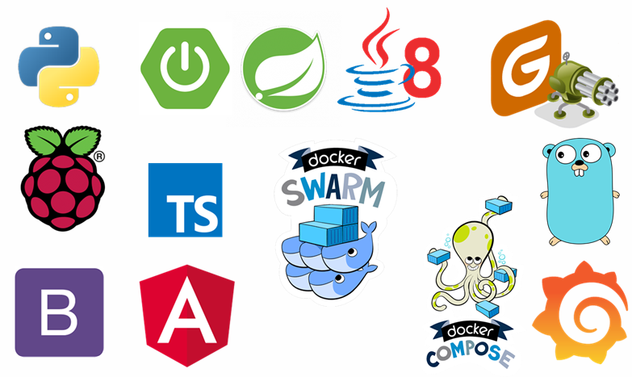
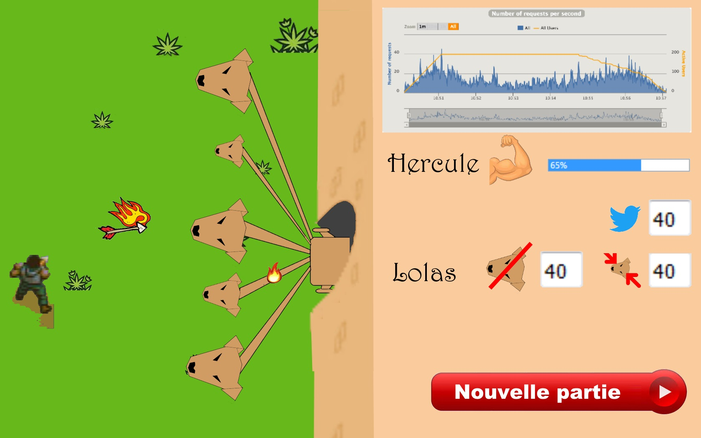

#piswarm
Nicolas Giraud
@nicgiro - @onepoint
- 10 ans de développement
- Lead Tech - Spécialiste Continuous X
- Craftman - Tech addict
o
Sentiments de l'échec
- Frustration
- Déception
- Motivation
Comment transformer nos sujets de conf en animation ?

Des attentes
- Un résultat fonctionnel
- Un produit segmenté
- Des contributeurs heureux
User Story Mapping
User Story Mapping
- Définition des acteurs
- Construction de User Story
- Hiérarchisation
Les forces
- Le groupe
- La pluralité
- L'innovation
Beaucoup de modules
Beaucoup de composants
Problématiques
- L'aspect Fullstack
Problématiques
- Le Hardware
- Python
- Design
Problématiques
- L'intégration
- Bouchon
Des concepts
- Programmation Réactive
- Programmation Evenementielle
- Architecture hexagonale
- Profils Spring
Avant..
Après
#piswarm

Nicolas Giraud - @nicgiro @onepoint